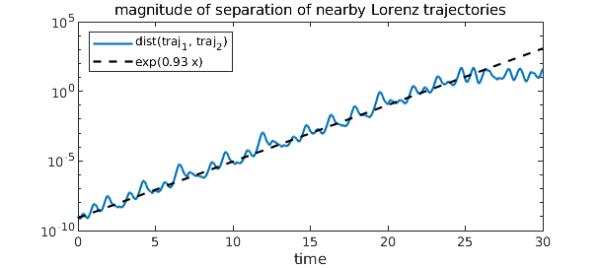

Lyapunov exponents are characteristic quantities of dynamical systems. For a continuous-time dynamical system, the maximal Lyapunov exponent is defined as follows [1]. Consider a trajectory $\mathbf{x}(t)$, $t\geq0$ in phase space and a nearby trajectory $\mathbf{x}(t) + \delta(t)$, where $\delta(t)$ is a vector with infinitesimal initial length. As the system evolves, track how $\delta(t)$ changes. The maximal Lyapunov exponent of the system is the number $\lambda$, if it exists, such that $$ | \delta(t) | \approx | \delta(0) | e^{\lambda t}. $$
The reason we've used the word "maximal" is that dynamical systems don't just have a single Lyapunov exponent. Rather, every dynamical system has a spectrum of Lyapunov exponents, one for each dimension of its phase space. Like the largest eigenvalue of a matrix, the largest Lyapunov exponent is responsible for the dominant behavior of a system.
Negative Lyapunov exponents are associated with dissipative systems; Lyapunov exponents equal to zero are associated with conservative systems; and positive Lyapunov exponents are associated with chaotic systems (provided the system has an attractor).
Let's estimate the maximal Lyapunov exponent of the Lorenz system, which is known to be chaotic. We will solve for two nearby trajectories on a reasonably large time interval, say $t\in[0,30]$. Here are the equations governing the system:
dom = [0,30];
N = chebop(@(t,x,y,z) [ diff(x) - 10*(y - x);
diff(y) - 28*x + y + x*z;
diff(z) + 8*z/3 - x*y ], dom);
Now we solve for two trajectories that have a small initial separation, say $10^{-9}$.
ep = 1e-9; N.lbc = @(x,y,z) [x+2; y+3; z-14]; [x1,y1,z1] = N\0; % Components of 1st trajectory N.lbc = @(x,y,z) [x+2; y+3; z-14+ep]; [x2,y2,z2] = N\0; % Components of 2nd trajectory
Now we find the distance between trajectories using the distance formula. This distance, which is a function of time, is plotted using a log scale on the y-axis.
d = sqrt(abs(x1-x2)^2 + abs(y1-y2)^2 + abs(z1-z2)^2);
semilogy(d)
xlabel('time')
title('magnitude of separation of nearby Lorenz trajectories')

The log of the distance between trajectories is well approximated by a straight line with positive slope, so it seems the Lorenz system has a positive Lyapunov exponent.
Notice, however, that the positive slope only holds up for the first 25 time units or so. After that, the curve levels off. That is because all trajectories of the Lorenz system wind up in its strange attractor: since trajectories are bounded, they can only get so far apart.
The slope of the line can be computed by finding a linear fit to the log of d. We'll only use the first 25 time units, the range where the separation increases exponentially.
logd = log(d{0, 25});
logd2 = polyfit(logd, 1);
slope = logd2(1) - logd2(0)
slope = 0.934100195835882
And here it is for comparison to the previous plot:
hold on
x = chebfun('x', [0 dom(2)]);
semilogy(.8e-9 * exp(slope*x), 'k--')
legend('dist(traj_1, traj_2)', sprintf('exp(%1.2f x)', slope), ...
'location', 'northwest')

This approximation isn't bad at all -- the maximal Lyapunov exponent for the Lorenz system is known to be about $0.9056$ [3]. To calculate it more accurately we could average over many trajectories. It is remarkable that this characteristic quantity of the most famous chaotic system is known to only a few decimal places; it is indicative of the difficulty in analyzing complex behavior.
References
-
Strogatz, Steven H. Nonlinear dynamics and chaos: with applications to physics, biology and chemistry. Perseus publishing, 2001.
-
Seydel, Rudiger. Practical bifurcation and stability analysis. Springer, 2010.
-
Viswanath, Divakar. Lyapunov exponents from random Fibonacci sequences to the Lorenz equations. Doctoral dissertation. Cornell University, 1998.